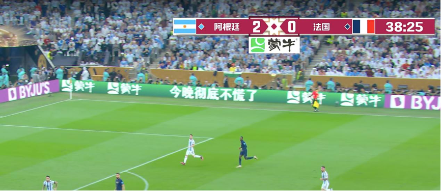
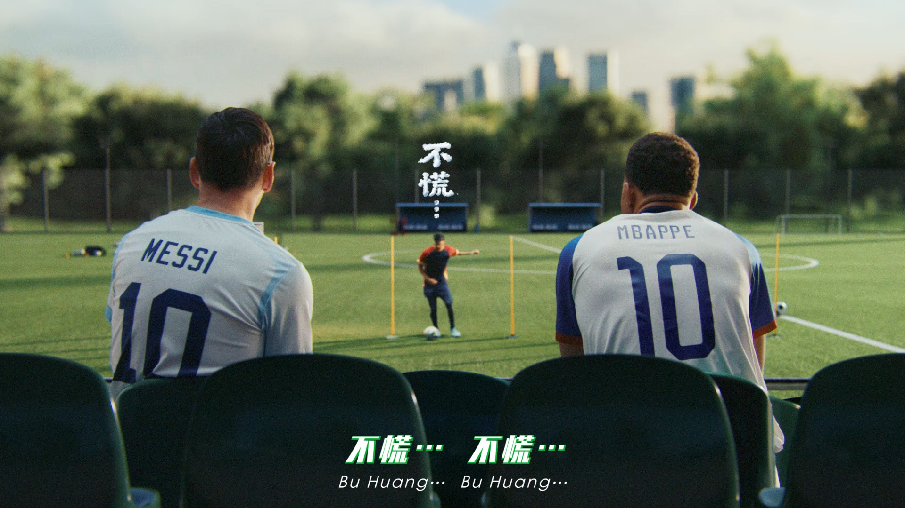
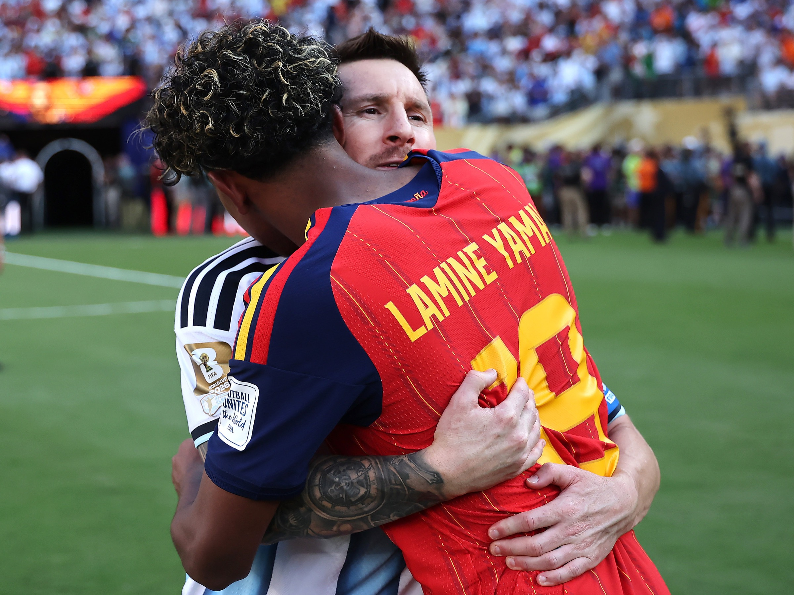

案例发生了什么




蒙牛在 2018 年成为 FIFA 世界杯全球官方赞助商，并以梅西为核心建立“天生要强”：球星面对质疑与坚持的故事负责情绪，全品类世界杯包装、门店陈列和渠道促销负责把口号带入日常消费。
赛前以官方身份与签约梅西建立总主题；随后让广告片、世界杯包装、全品类铺货和渠道促销同步上线；赛事过程中根据梅西和球队节点持续更新内容；赛后保留“要强 / 不慌”等用户语言，并在 2022、2026 继续改写为跨届品牌资产。
MARKETING KNOWLEDGE ROUTER · 营销知识路由器
营销启发卡
把历届经典的记忆点、商业结构和迁移方法放在同一层阅读。 卡片底部按主题连接全站相关案例、经典方法与深度文章。
核心动作
大赛压力下仍坚持变强的自我投射，以及梅西赛果起伏引发的陪伴感；“天生要强”不是一张梅西海报，而是一句可以同时贴在球星、普通人和产品上的态度。
传播与商业机制
“要强”既能解释运动员，也能解释乳品所承载的成长与营养；因此人物态度、产品包装和企业精神可以共用同一语言；赛前以官方身份与签约梅西建立总主题；随后让广告片、世界杯包装、全品类铺货和渠道促销同步上线；赛事过程中根据梅西和球队节点持续更新内容；赛后保留“要强 / 不慌”等用户语言，并在 2022、2026 继续改写为跨届品牌资产。
可复用的方法
人物代言要产生长期价值，必须先找到品牌与人物都能成立的精神母题，再让包装、渠道和赛期内容共同重复它。
适用条件、风险与证据
- 梅西个人赛果不可控；单届曝光、互动和销售也必须与跨届累计效果区分，不能把后续资产全部归因给 2018 一次传播。
- 品牌官方复盘可证明动作与长期叙事，但曝光、互动和销量仍需区分单片、单渠道与整盘数据，不能把后续三届累计结果归因给 2018 一次传播。
资料与来源
官方资料与原始来源
市场 / 权益
中国
官方赞助商
创意打法
精神母题型；球星叙事型；全品类包装型；渠道整合型
来源按品牌/官方发布、官方账号留存、权威媒体、获奖案例库分层记录；品牌与奖项自报结果不视作独立审计。